物理图像：bucket brigade 逐对转移
把电子从源极装上第一个点、从最后一个点卸到漏极，中间的每一步都是一次双量子点式的点间电荷跃迁：降低目标点的电化学势、同时抬高当前点的电化学势，电子便沿电荷稳定图中的跃迁线”翻”过反交叉。整个序列像古代救火队列（bucket brigade）逐桶传水，因此得名。与表面声波（SAW）传送带或行波势阱方案相比，bucket brigade 只依赖栅压脉冲序列，不需要压电衬底或行波结构，天然兼容大规模栅控阵列。
若无穿梭错误，每个循环恰好转移一个电子；以频率 重复循环，器件中流过电流
其中 是元电荷、 是穿梭脉冲重复频率、 是每个循环并行搬运的电子数。这使电荷穿梭同时是一台单电子泵：测得的泵浦电流是否落在 （含反向的 ）上，就是对转移正确率的直接定量检验。
点间转移必须相对隧穿耦合绝热：栅压斜坡要足够慢（或经低通滤波整形），使电子始终跟随电荷基态而不被激发到产生泵浦误差的态。阵列中每对相邻点的隧穿耦合都需事先调到足够大（GHz 量级）。
硅 9 点阵列实验（Mills 2019）
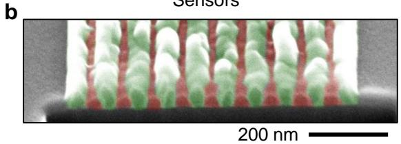
9 点电荷穿梭器件：(a) 伪色 SEM 图——9 点线性阵列（自左向右编号）配 3 个近邻电荷传感器（圆圈 S），粉色为柱塞栅、绿色为势垒栅、蓝色为源漏积累栅；(b) 交叠铝栅工艺的斜切截面 SEM；(c) 穿梭序列示意——四个时刻的限域势 V(x)，电子随势阱依次向右传递。图源：Mills et al. (2019), Fig. 1。
普林斯顿 Petta 组在 Si/SiGe 平台上用交叠铝栅工艺制备了 9 点线性阵列 + 3 个电荷传感器，演示了硅中的 bucket brigade 电荷穿梭：单个电子穿越整个 ~1 µm 阵列耗时 ~50 ns，比自然硅的 快一个量级以上——这正是自旋态传输（把自旋比特的量子态连同电子一起搬走）所需的时标条件。
虚拟门空间：在 9 维电荷稳定空间中导航
9 点阵列的电荷态由 9 维栅压空间 控制，人工在其中设计轨迹并不可行。实验的核心方法学是把控制坐标换成虚拟电极：先测出器件的电容矩阵，再通过
把栅压变化 映射为各点电化学势变化 ，其中 是无量纲的（归一化电容）矩阵、 是点 1 的实验标定杠杆臂、 为元电荷。虚拟门 定义为 矩阵的逆变换：改变 只移动第 个点的电化学势，阵列其余部分一阶不动。
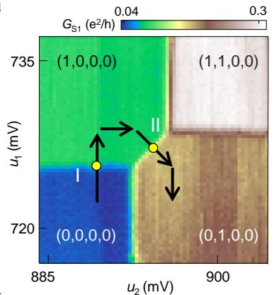
虚拟门电压空间的建立：(c) 以物理柱塞栅压 V_P1、V_P2 测得的双点电荷稳定图——交叉电容使跃迁线倾斜；(d) 同一双点在虚拟门坐标 u₁、u₂ 下的稳定图——跃迁线正交，每个点的电化学势可独立移动。图源：Mills et al. (2019), Fig. 2。
阵列采用逐点迭代调谐：先形成点 1–2 双点并把隧穿耦合调到 ，再纳入点 3、重新标定三维虚拟门空间，如此重复直到 9 点配置完成。每加入一个新点都会微扰既有电容矩阵，因此虚拟门标定是贯穿搭建全程的迭代流程。
穿梭轨迹与并行搬运
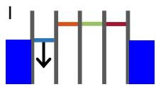
4 点阵列的穿梭轨迹：(a–c) 虚拟门空间中相邻点对的电荷稳定图（叠加穿梭轨迹，罗马数字标记序列段落）；(d) 穿梭序列中各点电化学势的时间演化（~1 ns 斜坡 + 低通滤波保证绝热）；(e) 对应位置的能级图。图源：Mills et al. (2019), Fig. 3。
穿梭序列分五步：从源极装载电子到点 1（步骤 I）、逐对越过点间跃迁（II–IV）、从点 9 卸载到漏极（V）。每次点间转移后都把身后点的化学势抬到源极费米面以上，确保电子只前进不倒退。扩展到 9 点后，实测泵浦电流在全部频率范围内严格跟随 ；序列反序即得 。并行版本同样成立：2 电子（间隔至少 3 个空点）与 3 电子（间隔 2 个空点）序列分别给出 与 。在 – 平面上泵浦电流呈现宽阔平台——得益于虚拟门参数的正交性，这是对方案稳健性的直接展示；最高泵浦电流处 2–3% 的偏差与电流放大器 3% 的增益精度一致。
从电荷到自旋：相干性约束
电荷穿梭演示的是”电子搬运”；量子态传输要求把自旋相干一起搬走，这带来额外约束：
- 时标：总穿梭时间必须远小于 （自然硅 ~1 µs；同位素纯化硅可放宽到几十 µs 以上），9 点 50 ns 的演示留出了充足裕量；
- 谷态：穿越微米级无序景观时必须保持足够大的谷劈裂以避开自旋–谷热点，否则弛豫急剧增强（见全局操控与频率均匀化词条”穿梭通道的 E_VS 地图”一节的逐点对策）；
- 交换残余：相邻点间残余交换与穿梭脉冲的配合决定装载/卸载阶段的保真度。
锗空穴体系已实测高保真相干自旋输运（9 点链穿梭并保持相干），硅电子的自旋穿梭保真度也在快速推进——电荷穿梭由此从”单电子泵”演变为阵列级量子总线与寄存器间链路的候选方案。
单次转移的保真度理论：谷相位、相位误差与自旋翻转（Zhao 2018）
“从电荷到自旋”一节的三条约束在 Zhao & Hu 的双点微观理论里被逐条定量化。出发点是硅双点的谷-轨道四能级模型（|L/R⟩ × |±⟩，谷劈裂通常远小于谷内轨道激发能）：两点谷轨道耦合的相位差 δφ 决定谷内与谷间隧穿耦合 的分配——δφ=0 时纯谷内、δφ=π 时纯谷间。
隧穿耦合与谷相位差的测量：GaAs 的 DiCarlo 电荷分布拟合在硅上会系统出错。无谷间隧穿时左点占据 与二能级公式相同；计入 后修正为
其中 、（ 含失谐与谷劈裂失配 ）。数值对照：δφ=π 时用旧公式拟合 误差高达 65%，四能级公式仅 5% 且能同时提取 。谷相位差还可从源漏共振隧穿读出——两个反交叉处的电流比 ，或经腔响应、LZS 干涉提取。
相位误差：双点势修正有效 g 因子，。零失谐处修正最大（激发轨道_gap 从单点 缩到隧穿能 量级，二阶自旋轨道微扰 放大），转移累积相位误差
在典型参数（l₀=10 nm、d=20 nm、谷劈裂 50 µeV）下、B=1.4 T、ε₀=0.06 meV 时达 −0.125π——用单点 g 因子估计动力学相位会留下可观误差。更隐蔽的是谷依赖相位误差：谷劈裂不同导致两谷自旋劈裂不同，自旋与谷即便无直接耦合也会纠缠；对谷求迹（谷不敏感的读出即此操作）后
成为混合态——经典信息（自旋布居）完好而量子相干丢失，相干损失与自旋-谷并发度同步（下图）。数值示例（|Δ_L|=60 µeV、|Δ_R|=30 µeV、E_z=40 µeV、E_x=1.6 µeV、10 ns 转移）显示相干指标随 δφ 显著下降。
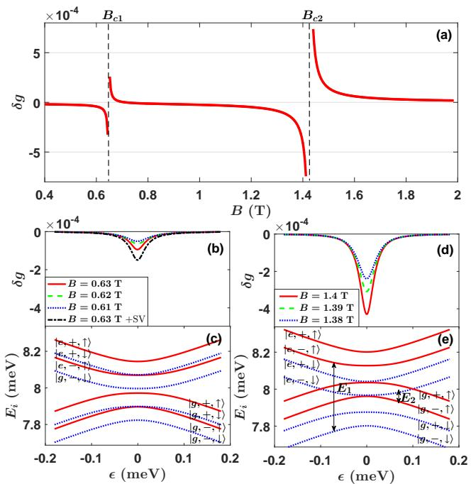
双点势对有效 g 因子的修正 δg = g_eff − g_s：(a) 随磁场的变化（零失谐）——B_c1、B_c2 两个热区（分别为自旋-谷与自旋-轨道反交叉）处 g 因子无定义、修正发生跳变；(b)(d) 随失谐的变化——零失谐处修正最大、远失谐时趋于单点值；(c)(e) 两热区附近的能级图（蓝为自旋向下、红为向上）。典型参数下 B=1.4 T、ε₀=0.06 meV 的累积相位误差达 −0.125π。图源：Zhao & Hu (2018)，Fig. 5。
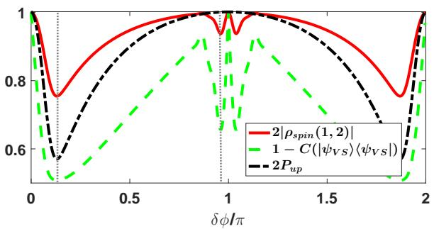
谷依赖相位误差对自旋相干的摧毁：归一化指标（自旋布居 P_up、约化密度矩阵非对角元 2|ρ_spin(1,2)|、自旋-谷并发度 C）随谷相位差 δφ 的变化——布居几乎不变（经典信息保真），而相干与并发度同步大幅下降：自旋-谷纠缠使”对谷求迹”的读出把纯自旋态变成混合态。图源：Zhao & Hu (2018)，Fig. 6。
自旋翻转：硅的弱自旋轨道耦合让大多数反交叉在扫失谐时退化为交叉（快穿越、不翻转），例外是零失谐附近的宽反交叉——同一点内不同谷态的能差对失谐弱依赖，能级近乎平行，Landau–Zener 绝热概率大增：初态取第四能级（经两个远失谐反交叉）自旋存活率 98.5%，取第二能级（经两个零失谐宽反交叉）骤降到 86.6%（见Landau–Zener 跃迁词条的机制框架）。微磁体横向梯度 E_x（可比自旋轨道耦合大一个量级）下，(|Δ_L|, |Δ_R|) 相对 E_z 的关系把参数空间分成四区：高场区（两点谷劈裂均小于 E_z）无反交叉、最安全；中场区（一侧小于）单个反交叉、小而可观的翻转；低场区（均大于）双反交叉且干涉可增强或抵消翻转——最险的区域。
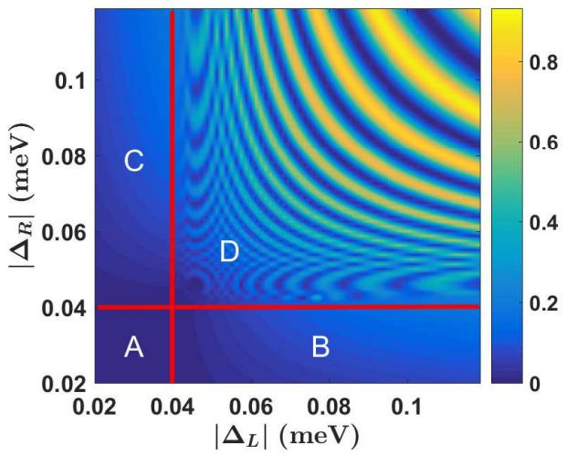
微磁体存在时的转移保真度地图：自旋翻转误差 1−F_spin 在左右两点谷劈裂 (|Δ_L|, |Δ_R|) 参数空间中的分布（E_z=40 µeV、E_x=2 µeV、10 ns 扫描）——按三点能量关系分四区：高场区（左下，无反交叉）最安全；中场区（两侧条带）单反交叉致小误差；低场区（右上）双反交叉干涉形成明暗条纹、误差最大。图源：Zhao & Hu (2018)，Fig. 9。
抑制方案：利用双点内多个反交叉做概率性纠错的三步 LZ 协议——(1) 快扫过反交叉再慢速返回（二能级隧穿概率 ）+ 电荷测量投影，把初态压向更安全的近基态流形；(2) 执行转移（自旋翻转建模为幅度阻尼，）；(3) 对称的 LZ 操作 + 电荷投影恢复初态。以残余相干为指标，选择得当的 v_LZ1/v_LZ2 组合可显著优于直接转移——代价是电荷测量投影的概率性成功。
约束阵列中的穿梭程序自动生成（Sato 2024）
阵列规模化引入新的矛盾：为压缩连线数，二维阵列普遍采用行列共享控制门（门数仅随比特数 按 增长），但同一列/行的所有量子点被迫同步接受同一操作——独立寻址、串扰规避与读出路由反而要靠穿梭来解决，而穿梭本身又受同一套共享门约束。Hitachi 的 Sato 等人针对其 16×8 硅量子点阵列（SQDA）给出了系统解法。
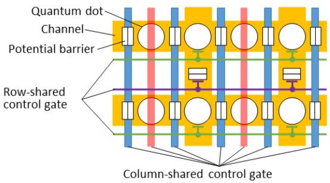
行列共享控制门的 16×8 硅量子点阵列结构：第一层控制门按列共享（驱动水平穿梭与单比特门），第二层按行共享（驱动垂直穿梭与两比特门），门总数按 O(√n) 增长。图源：Sato et al. (2024), Fig. 2。
核心工具是状态转移系统形式化：
其中 是有限状态集（每个状态编码全部电子在阵列图上的位置）， 是初始状态， 是操作标签集（量子门、测量、穿梭），转移 把一个状态经一个操作映射到下一状态， 是终态集。阵列结构本身建模为无向图；共享门约束、串扰规避条件（执行单比特门前撤离同列与相邻列的电子）、两比特门的通道连接条件等全部写成该系统上的逻辑约束。在此基础上实现量子编译器（基于 Qiskit）：输入任意由原生门 、、 组成的量子电路，用深度优先搜索在 中生成满足全部约束的操作程序——对 10/30/50 比特、多达 300 门的随机电路均可在实用时间内完成编译，且编译时间主要随门数增长、对比特数不敏感。
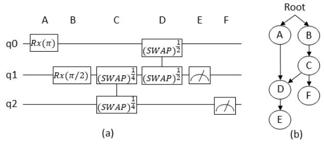
量子电路的数据依赖图（DAG）：编译器按 front layer 逐门调度，在满足共享门与串扰约束的前提下穿插穿梭操作，把电路门序列映射为阵列操作程序。图源：Sato et al. (2024), Fig. 13。
穿梭 vs 串扰的保真度账本：设单次穿梭保真度为 、单次串扰保真度为 ，对 比特、 门的电路，规避串扰的方案需要 次穿梭操作，则两种方案的保真度渐进比较归结为
——只要单次穿梭足够好（四次方仍胜过一次串扰），“先撤离再操作”就优于”忍受串扰”。模拟确认了规避方案的输出态保真度更高。这一判据把穿梭的工程需求（单步保真度）与阵列架构收益直接挂钩：按当前硅穿梭实验的进展， 每提高一个量级，可支撑的电路规模按 放大。
全向穿梭：绕开谷激发的二维方案（Németh 2024）
一维传送带有一个被无序物理注定的问题：合金无序主导（ADD）区谷劈裂的涨落 ，而长轨迹上必然撞到 低得危险的位点（eV 时典型谷劈裂景观里危险点密度很高），电子在那里经 Landau–Zener 过程跃入激发谷。规避手段里最有效的一招是横向绕行：把轨迹横移 （须大于点直径 ）绕开危险区——但常规穿梭器件的横向控制只有 ，先天不足。Németh 等（UW-Madison）据此提出两级方案：
多通道穿梭：并联通道间用屏蔽栅（S₁–S₃）控制失谐 ε 与隧道耦合 ，通道间距给出 。转移过程用双通道×双谷的四能级哈密顿量建模，谷相位差 时隧道矩阵元中出现谷间耦合项
它把左通道的谷基态直接投到右通道的谷激发态——这正是多通道方案的主要误差源（ 时必然激发）。仿真（每点平均 10⁴ 次随机谷耦合抽样，eV）：暂停式转移（纵向传送带暂停、、）在 eV、eV、–50 ns 时成功率 ；运动式转移（不停带、 m/s）在通道间失谐涨落非关联时显著劣化——且暂停式本身不可扩展（全通道电子须同时暂停、退相干累积）。结论：通道隧道转移这条路先天受限。
全二维 clavette 栅传送带：把门做成 2D 单元的”clavette”像素栅（4×4 单元仅 16 条控制线），电压按双轴正弦叠加
独立调 即得任意方向运动（方向角 ，速度 ）；绕行用半圆轨迹（半径 R=50 nm，、）。这类器件需刻蚀沉积与垂直通孔的工业工艺，无法用重叠栅实现。泄漏评估用五口袋×双谷的十能级 Lindblad 仿真（含谷耦合 无序与声子弛豫）：10 µm 行程的口袋间泄漏在 时低于 ；静电仿真扫描 与栅距 给出高保真窗口——、 同时保 与 （口袋间隧道与轨道激发双双压制），且窗口在很宽参数范围内稳健。
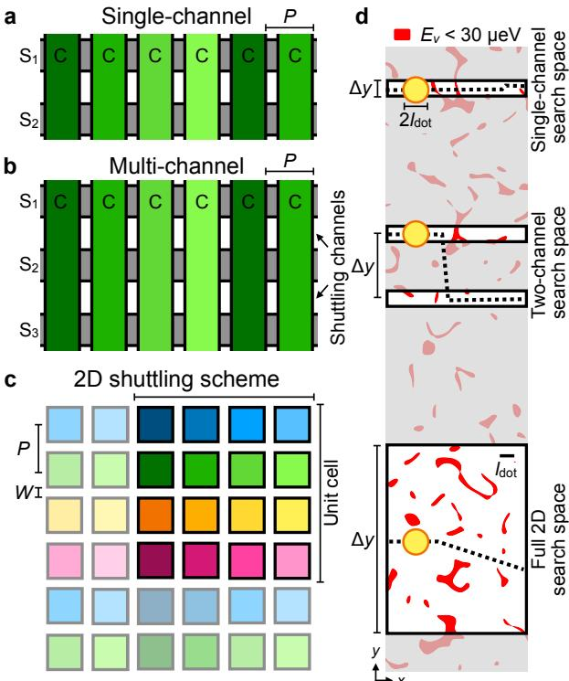
三种穿梭几何与谷劈裂规避：(a) 常规单通道——屏蔽栅只能提供 ~20 nm 横向控制，clavier 栅正弦驱动形成移动势阱；(b) 多通道——独立屏蔽栅 S₁–S₃ 控制通道间失谐与隧道，横移可达 ≳100 nm；(c) 全二维——clavette 像素栅组成 2D 单元，双轴正弦驱动实现任意方向输运；(d) 典型低谷劈裂区分布图（平均 100 µeV、点直径 28 nm），三种几何的横向绕行能力逐级增强。图源：Németh et al. (2024)，Fig. 1。
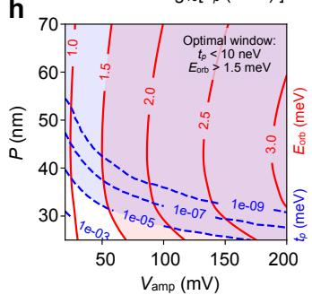
2D 穿梭器的高保真设计窗口：轨道激发能 与口袋间隧道耦合 的等值线随栅距 P 与正弦电压幅度 的变化，紫色阴影为同时满足 、 的窗口（约 nm、 mV）——口袋泄漏与轨道激发在宽参数范围内同时被压制。图源：Németh et al. (2024)，Fig. 3 面板 (h)。
由此提出模块化架构：比特 plaquette（比特 + 读出/控制电子学环绕 2D 穿梭器布置）内部全连通、plaquette 之间用 2D 穿梭互连绕开谷危险区、经典控制电子学穿插其间——穿梭从”点间搬运”升级为架构级的量子路由层。
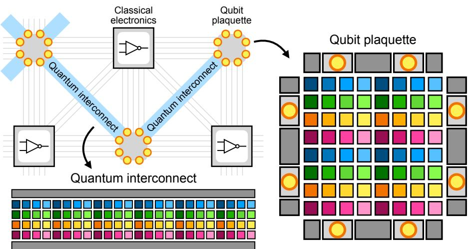
基于 2D 穿梭的模块化量子计算架构：比特 plaquette（比特、读出与控制电子学布置在 2D 穿梭器周边）+ 量子互连（2D 穿梭器）+ 穿插其间的经典控制电子学三技术叠加——plaquette 内全连通，互连允许电子绕开低谷劈裂区路由。图源：Németh et al. (2024)，Fig. 4。
参数与量级
| 量 | 典型值 | 来源 |
|---|---|---|
| 穿梭时标（单电子过 9 点阵列） | ~50 ns（ 的一成以下） | Mills 2019 |
| 阵列规模 | 9 点线性 + 3 电荷传感器，~1 µm 长 | Mills 2019 |
| 点间隧穿耦合 | Mills 2019 | |
| 栅压斜坡 | ~1 ns（配低通滤波保绝热） | Mills 2019 |
| 泵浦电流验证 | ，；最高电流偏差 2–3%（放大器增益精度 3%） | Mills 2019 |
| 虚拟门变换 | ， | Mills 2019 |
| 约束阵列规模 | 16×8 SQDA，共享门数 ，最多 56 比特电路 | Sato 2024 |
| 编译验证 | 10/30/50 比特、1–300 门随机电路，实用时间内完成 | Sato 2024 |
| 单比特门穿梭开销 | 次穿梭（m 门、n 比特） | Sato 2024 |
| 串扰规避判据 | Sato 2024 | |
| 谷劈裂涨落（ADD 区） | （eV 时 56.4 µeV）；绕行判据 nm | Németh 2024 |
| 多通道暂停式转移成功率 | ≳95%（eV、eV、–50 ns） | Németh 2024 |
| 2D 穿梭泄漏 | 10 µm 行程口袋泄漏 <10⁻³（ meV）；设计窗口 nm、 mV、 meV | Németh 2024 |
| 2D 单元控制线 | 4×4 clavette 栅单元 16 条独立线；绕行半径 R=50 nm | Németh 2024 |
| 隧穿拟合误差 | δφ=π 时 DiCarlo 二能级公式拟合 |t₊| 误差 65%，四能级公式 5% | Zhao 2018 |
| 转移相位误差 | Φ_error = −0.125π（B=1.4 T、ε₀=0.06 meV、谷劈裂 50 µeV 典型参数） | Zhao 2018 |
| 宽反交叉自旋存活率 | 经远失谐反交叉 98.5% vs 经零失谐宽反交叉 86.6% | Zhao 2018 |
与其他概念的关系
- 虚拟电极：电荷穿梭在 点阵列中的可操作性完全建立在虚拟门坐标之上，Mills 2019 也是虚拟门方法的标志性应用；
- 双量子点与电荷稳定图：每一次点间转移就是一次双点电荷跃迁的绝热穿越；
- 量子点阵列：穿梭是阵列的”内部交通系统”，也是把中央比特送往端部读出/耦合资源的手段；
- 全局操控与频率均匀化：穿梭既是均匀化的执行机构（等效平均 g 因子），又受谷劈裂景观约束（E_VS 地图选轨迹）；
- 自动调控：阵列逐点搭建的虚拟门迭代标定（Mills）与操作程序自动生成（Sato）分别对应”调硬件”与”编软件”两层自动化；
- 二维量子点阵列：行列共享门的二维架构把穿梭从可选优化变为独立寻址的必要条件；
- 单自旋量子比特：自旋态传输是穿梭的终极目标，要求总时间 并规避自旋–谷热点；
- 锗量子点相干自旋输运：空穴体系中穿梭相干性的实验基准。
- 谷劈裂：一维轨迹注定遭遇低谷劈裂区（），全向穿梭把”绕开谷激发”从脉冲整形问题变成几何路由问题——需要先测绘 2D 谷劈裂地图；谷相位差 δφ 的测量方案（隧穿耦合比、电流比、LZS 干涉）见”单次转移的保真度理论”一节。
参考文献
- Mills, A. R., Zajac, D. M., Gullans, M. J., Schupp, F. J., Hazard, T. M., Petta, J. R. Shuttling a single charge across a one-dimensional array of silicon quantum dots. Nature Communications 10, 1063 (2019). DOI: 10.1038/s41467-019-08970-z；arXiv:1809.03976（QAtlas 缓存：1809.03976）。
- Sato, N., Sekiguchi, T., Utsugi, T., Mizuno, H. Generating Shuttling Procedures for Constrained Silicon Quantum Dot Array (2024). arXiv:2401.14683（QAtlas 缓存：2401.14683）。
- Németh, R., Bandaru, V. K., Alves, P., Brann, E., Eskandari, O. M., Soomro, H., Vivrekar, A., Eriksson, M. A., Losert, M. P., Friesen, M. Omnidirectional shuttling to avoid valley excitations in Si/SiGe quantum wells (2024). DOI: 10.1103/615j-xjyh；arXiv:2412.09574（QAtlas 缓存：2412.09574）。
- Zhao, X., Hu, X. Quantum coherent electron transport in silicon quantum dots (2018). arXiv:1803.00749（QAtlas 缓存：1803.00749）。
完整文献库（含各篇站内全文页）见 参考文献库。